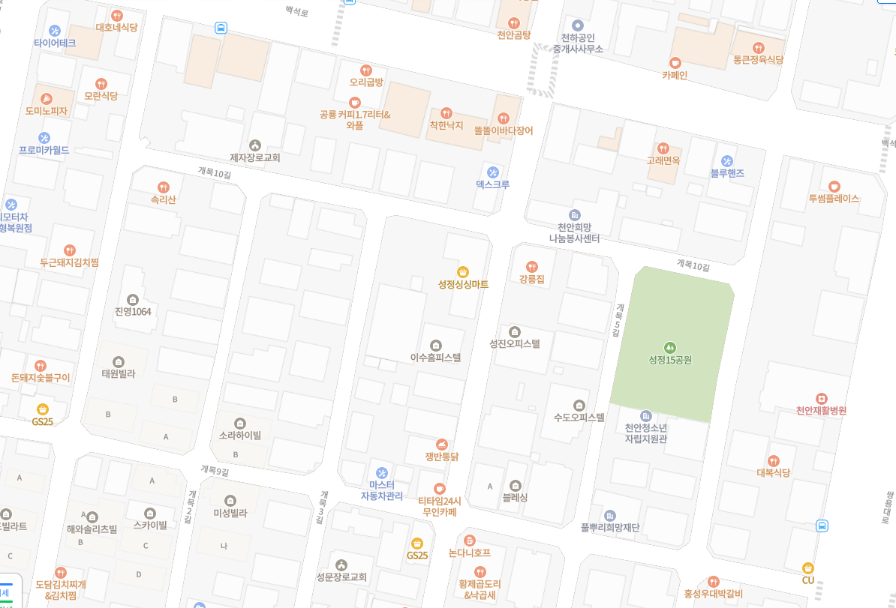
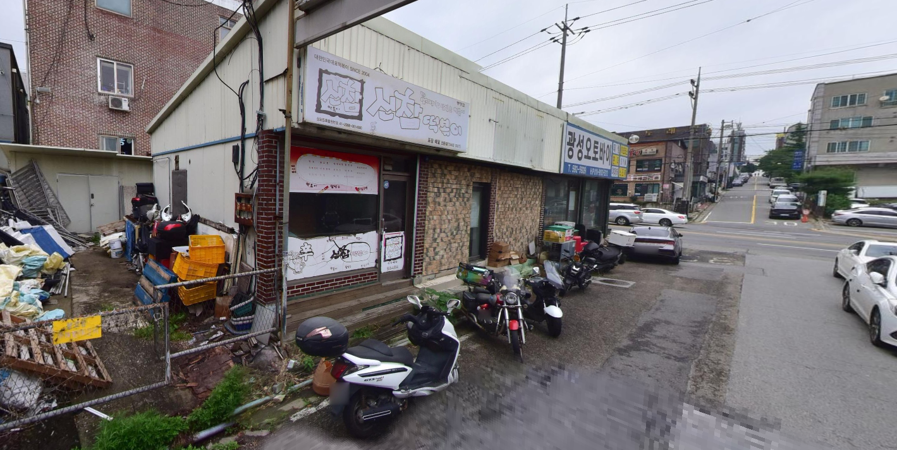

"천안 성정점"
여기만 피해도 어지간하면 괜찮다.
물론 성정점의 모든 음식점이 문제라는 것은 아니다. 하지만 어지간하면 피해야할 이유가 있는데

이런 빌라촌에

이런식으로 배달만 하는 가게가 즐비하기 때문이다.
한 가게내에서 떡볶이,국밥,중화요리,고기요리 등등 다양한 상호를 문어발로 뿌리고 배달만 보내는 식의 가게가 많은데
배달 전문 음식점 특성상 손님을 직접 대면하는 일이 드물고
외부 시선을 차단하기 위해 실내를 보이지 않게 하는 사례가 흔해 비위생적으로 운영되는 업소가 적지 않다.
물론 성정점의 모든 음식점이 문제는 아니기에 배달시켜먹을 때는 항상 배달앱 내의 주소를 보고 거리뷰 등으로 한 번 확인해보는 것이 좋을 것이다.
점심에 저 근방에서 배달 시켜먹었다가 배아파서 소화제먹고 이제서야 괜찮아져서 올린 글이니
천안 사는 개붕이들은 조심하길 바란다.
ㄹㅇ 뼈해장국 집인데 쌀국수 볶음밥 김치짜글이 별거 다 팔더라